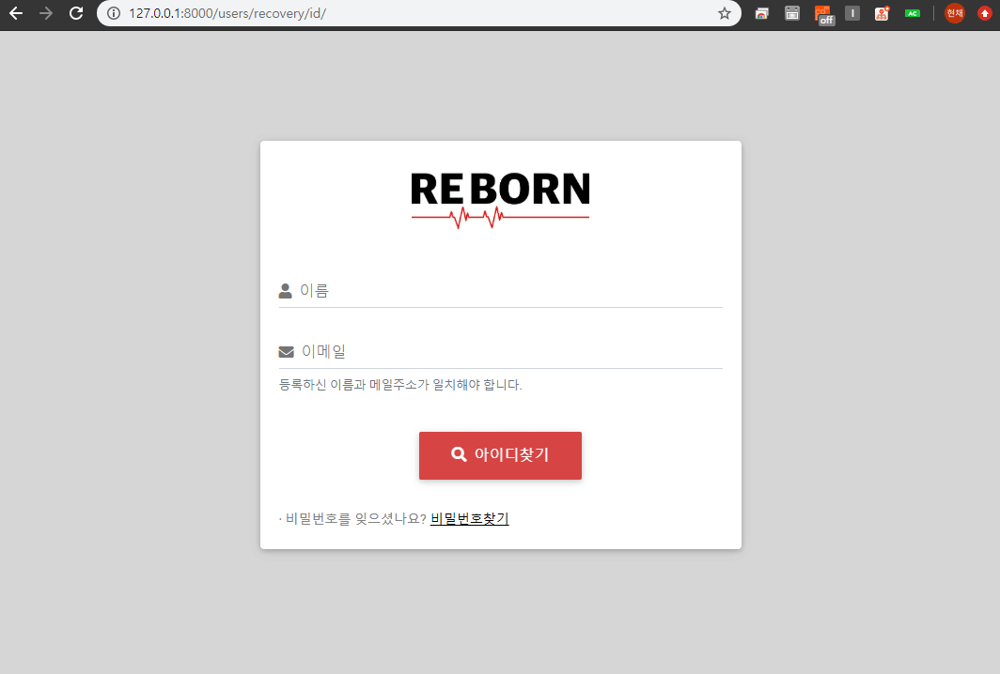

2020-03-29
Django 11. 아이디찾기 구현 (AJAX)
Jquery Ajax를 활용하여 비동기적으로 사용자의 아이디 찾기를 구현합니다.
1. Ajax CDN 추가 Jquery Ajax 는 웹페이지 전체를 다시 로드하지 않고 일부분만 로드하는 비동기 통신 의 사용기법 중 하나입니다. 쉽게 말해 동적인 웹페이지를 만들기 위한 방법으로, JavaScript fetch API 등 여러가지 기법이 있지만 이 프로젝트에서는 이번 포스팅인 아이디찾기 뿐 아니라 비밀번호 찾기, 댓글쓰기 등과 같은 기능을 구현할 때, 화면전체를 로드하지 않고 특정 데이터만 로드하기 위해 Jquery의 Ajax를 사용하겠습니다.
Ajax를 사용하기 위해 Jquery CDN 을 아래와 같이 templates 의 user_base.html 에 추가해줍니다.
1 2 3 <!-- templates/users/user_base.html --> <script type="text/javascript" src="https://cdnjs.cloudflare.com/ajax/libs/jquery/3.4.1/jquery.min.js"></script>
form을 생성하기 위해 forms.py 에 아래와 같이 RecoveryIdForm 클래스를 추가합니다.
1 2 3 4 5 6 7 8 9 10 11 12 13 14 15 16 17 18 19 20 21 # users/forms.py class RecoveryIdForm(forms.Form): name = forms.CharField(widget=forms.TextInput,) email = forms.EmailField(widget=forms.EmailInput,) class Meta: fields = ['name', 'email'] def __init__(self, *args, **kwargs): super(RecoveryIdForm, self).__init__(*args, **kwargs) self.fields['name'].label = '이름' self.fields['name'].widget.attrs.update({ 'class': 'form-control', 'id': 'form_name', }) self.fields['email'].label = '이메일' self.fields['email'].widget.attrs.update({ 'class': 'form-control', 'id': 'form_email' })
3. views.py 작성 접속중인 사용자의 접근을 방지하기 위해 decorator를 추가하고, GET으로 방금 생성한 form을 뿌려주는 RecoveryIdView 클래스를 views.py 에 아래와 같이 추가합니다.
1 2 3 4 5 6 7 8 9 10 11 12 13 14 # users/views.py from .forms import RecoveryIdForm from django.views.generic import View @method_decorator(logout_message_required, name='dispatch') class RecoveryIdView(View): template_name = 'users/recovery_id.html' form = RecoveryIdForm def get(self, request): if request.method=='GET': form = self.recovery_id(None) return render(request, self.template_name, { 'form':form, })
그리고 RecoveryIdView와 매핑된 템플릿에서 아이디찾기라는 버튼을 클릭했을 때 요청되는 Ajax함수를 추가합니다.
1 2 3 4 5 6 7 8 9 10 11 # users/views.py import json from django.core.serializers.json import DjangoJSONEncoder def ajax_find_id_view(request): name = request.POST.get('name') email = request.POST.get('email') result_id = User.objects.get(name=name, email=email) return HttpResponse(json.dumps({"result_id": result_id.user_id}, cls=DjangoJSONEncoder), content_type = "application/json")
템플릿에서 사용자의 name과 email을 입력하고 아이디찾기 버튼을 클릭했을시 각 데이터들이 Json객체 담겨 Ajax요청이 들어오게 됩니다. view에서는 일치하는 user객체를 찾아 쿼리를 반환 후, HttpResponse를 통해 응답하고 반환되는 값이 없으면 DoesNotExist 에러를 발생시킵니다.
4. urls.py 작성 생성한 각각의 view를 연결하기 위해 urls.py 의 urlpatterns 에 아래의 소스를 추가합니다.
1 2 3 4 # users/urls.py path('recovery/id/', views.RecoveryIdView.as_view(), name='recovery_id'), path('recovery/id/find/', views.ajax_find_id_view, name='ajax_id'),
5. templates 작성 recovery_id.html 을 생성하고 아래와 같이 템플릿을 작성한 뒤, Ajax를 위한 Script를 추가합니다.
1 2 3 4 5 6 7 8 9 10 11 12 13 14 15 16 17 18 19 20 21 22 23 24 25 26 27 28 29 30 31 32 33 34 35 36 37 38 39 40 41 42 43 44 45 46 47 48 49 <!-- templates/users/recovery_id.html --> <div> {% csrf_token %} <label name="label_name" for="{{ form_id.name.id_for_label }}">{{ form.name.label }}</label> {{ form.name }} <label name="label_email" for="{{ form_id.email.id_for_label }}">{{ form.email.label }}</label> {{ form.email }} <small> 등록하신 이름과 메일주소가 일치해야 합니다. </small> <div> <button id="find_id" name="recovery_id">아이디찾기</button> </div> <div id="result_id"></div> <script type="text/javascript"> $(document).ready(function () { $('#find_id').click(function () { var name = $("#form_name").val(); var email = $("#form_email").val(); $.ajax({ type: "POST", url: "/users/recovery/id/find/", dataType: "json", data: { 'name': name, 'email': email, 'csrfmiddlewaretoken': '{{csrf_token}}', }, success: function (response) { $('#result_id').replaceWith( '<div id="result_id"><hr><div><span>입력된 정보로 가입된 아이디는 </span><span id="result_id">' + response.result_id +'</span><span> 입니다.</span></div><hr></div>') }, error: function () { if (name == "" || email == "") { alert('이름와 이메일을 입력해주세요.'); } else { alert('입력하신 정보가 일치하지 않거나 존재하지 않습니다.'); } }, }); }) }); </script> </div>
Script를 보면 아이디 찾기 버튼을 클릭할 시 views.py에 작성해둔 ajax_find_id_view와 매핑된 url로 사용자가 입력한 name과 email, csrf공격보안을 위한 csrftoken을 data에 담아 Json타입의 POST 요청 을 하게 됩니다.
view에서는 data값을 받아 일치하는 쿼리를 찾은 후, 응답할시(success) 아이디 찾기 결과를 나타낼 result_id란 id값을 가지는 div부분을 반환된 값으로 replaceWith하게 됩니다. 입력 필드들의 값의 유무를 체크하고 일치하는 쿼리가 없어 DoesNotExist오류가 발생해 응답오류(error)가 발생했다면 작성한 alert창을 표시하도록 구현합니다.
6. 결과 
*전체 html, css 등은 자세하게 포스팅하지 않습니다. 제 Github 에서 소스를 확인하실 수 있습니다.